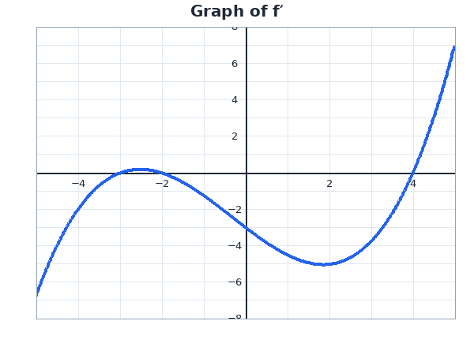

Section I, Part A · Multiple choice · No calculator · 60 minutes
- C(x) = (1/25)x² + 69x + 635 is the cost in dollars to produce x items. Find C′(20) and include units.(A)70.6 items per dollar(B)70.6 dollars per item(C)101.55 dollars per item(D)2031 dollars
- On what interval(s) is f(x) = x + 4/x increasing?(A)(-∞, -2) ∪ (2, ∞)(B)(0, ∞)(C)(-∞, ∞)(D)(-2, 0) ∪ (0, 2)
- Rain falls at R(t) = 0.4t + 0.4 inches per hour. How much rain falls in the first 8 hours?(A)3.6 inches(B)2 inches(C)16 inches(D)28.8 inches
- Solve y′ = 2x + 4 with y(0) = -6.(A)y = x² + 4x(B)y = 2x² + 4x - 6(C)y = x² + 4x - 6(D)y = 2x - 2
- Find f′(-1) for f(x) = x²e^(2x).(A)1(B)2(C)0(D)1/e²
- y′ = 5y and y(0) = 7. Find y′(0).(A)12(B)7(C)35(D)5
- Find the x-coordinates of all inflection points of f(x) = x⁴ - 2x³ - 36x² + x.(A)x = 0(B)x = 2 or x = -3(C)x = -2 or x = 3(D)x = 1/2
- Use the trapezoidal rule with the subintervals in the table to approximate ∫ from 0 to 8 f(x) dx. f(0) = 2; f(3) = 26; f(6) = 28; f(7) = 17; f(8) = 27.(A)129(B)335/2(C)171/2(D)300
- Find d/dx [∫ from -1 to e^x t³ dt].(A)e^(4x) + 1(B)x³e^x(C)e^(3x)(D)e^(4x)
- Use the tangent line to f(x) = e^x at x = 0 to approximate f(0.1). Is the approximation an overestimate or an underestimate?(A)1, an overestimate(B)1.2, an underestimate(C)1.1, an overestimate(D)1.1, an underestimate
- Find the value of k that makes f continuous everywhere: f(x) = x² + x for x < 3, and f(x) = kx + 1 for x ≥ 3.(A)k = 11/3(B)k = 11(C)k = 13/3(D)k = -11/3
- Find f′(x) for f(x) = (x² + 2)³.(A)6x(x² + 2)³(B)3x(x² + 2)²(C)6x(x² + 2)²(D)3(x² + 2)²
- f(x) = 2x³ - 54x - 4 has a critical number at x = -3. Use the second derivative test to classify it.(A)relative maximum(B)relative minimum(C)neither(D)point of inflection
- Find F(x) if F′(x) = -12x² - 10x and F(1) = 7.(A)F(x) = -4x³ - 5x² + 16(B)F(x) = -4x³ - 5x² + 7(C)F(x) = -24x - 3(D)F(x) = -4x³ - 5x² - 16
- Which shows the variables of y′ = 5xy correctly separated?(A)(1/x) dx = 5y dy(B)(1/y) dy = 5x dx(C)y dy = 5x dx(D)dy = 5xy dx
- Can L'Hôpital's Rule be applied directly to lim (x → 0) sin(3x)/x?(A)No, the rule only works for limits at ∞.(B)Yes, L'Hôpital's Rule works on any quotient.(C)Yes, substitution gives 0/0.(D)No, substitution does not give 0/0 or ∞/∞.
- Classify the discontinuity of f(x) = (x - 2)/(x + 3) at x = -3.(A)removable(B)jump(C)infinite(D)no discontinuity
- Let f(x) = x³ + 5x + 2, which is one-to-one. Find (f⁻¹)′(8).(A)8(B)1/8(C)-1/8(D)1/197
- Which definite integral equals lim (n → ∞) Σ (k = 1 to n) 1/(2 + k/n) · (1/n)?(A)∫ from 2 to 4 1/x dx(B)∫ from 0 to 1 1/x dx(C)∫ from 2 to 3 1/x dx(D)∫ from 2 to 3 1/(x + 2) dx
- A tank holds 113 L at t = 0. Water enters at E(t) = 5t + 5 L/min and leaves at a constant 20 L/min. How much water is in the tank at t = 5 minutes?(A)601/2 L(B)-25/2 L(C)201/2 L(D)401/2 L
- Each side of a square increases at 5 in/min. How fast is the area increasing when a side is 14 in?(A)140 in²/min(B)10 in²/min(C)980 in²/min(D)70 in²/min
- Given ∫ from 3 to 5 f(x) dx = 9, ∫ from 5 to 8 f(x) dx = 8, and ∫ from 3 to 5 g(x) dx = 10, find ∫ from 3 to 5 (f(x) + 4) dx.(A)13(B)36(C)17(D)29
- The graph of f′, the derivative of f, is shown. At which x-value(s) does f have a relative minimum?

(A)x = −2 and x = 5(B)x = −3 and x = 4(C)x = −3 and x = −2 and x = 4(D)x = −2 - g(x) = ∫ from -4 to x f(t) dt, where the graph of f is shown on (-4, 4). On what open interval(s) is g increasing?
 (A)(-4, 0)(B)(-4, -4/3) ∪ (10/3, 4)(C)(-4/3, 10/3)(D)(-4, 4)
(A)(-4, 0)(B)(-4, -4/3) ∪ (10/3, 4)(C)(-4/3, 10/3)(D)(-4, 4) - Find the slope of the tangent line to x² + xy + y² = 7 at the point (-1, 3).(A)1/5(B)2/5(C)-5(D)-1/5
- Find the area of the region bounded by y = x³ - 2x² - 7x - 4 and y = x³ - x.(A)-1/3(B)-25/6(C)1/3(D)-23/12
- Find ∫ 3/(x² - 2x + 10) dx.(A)tan⁻¹((x - 1)/3) + C(B)tan⁻¹(x - 1) + C(C)3ln|x² - 2x + 10| + C(D)3tan⁻¹((x - 1)/3) + C
- Evaluate ∫ from -2 to 1 (6x² + 8x + 3) dx.(A)6(B)-15(C)9(D)15
- For f(x) = (x² - x - 2)/(x + 1), a table gives f(-1.1) ≈ -3.1000; f(-1.01) ≈ -3.0100; f(-1.001) ≈ -3.0010; f(-0.999) ≈ -2.9990; f(-0.99) ≈ -2.9900; f(-0.9) ≈ -2.9000. Estimate lim (x → -1) f(x).(A)0(B)-2.9000(C)does not exist(D)-3
- The graph of f is shown at the top. Which graph, A, B, C or D, could be the graph of f′?
 (A)Graph A(B)Graph B(C)Graph C(D)Graph D
(A)Graph A(B)Graph B(C)Graph C(D)Graph D